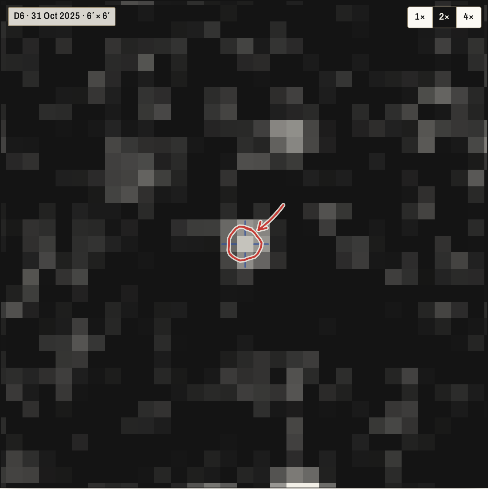
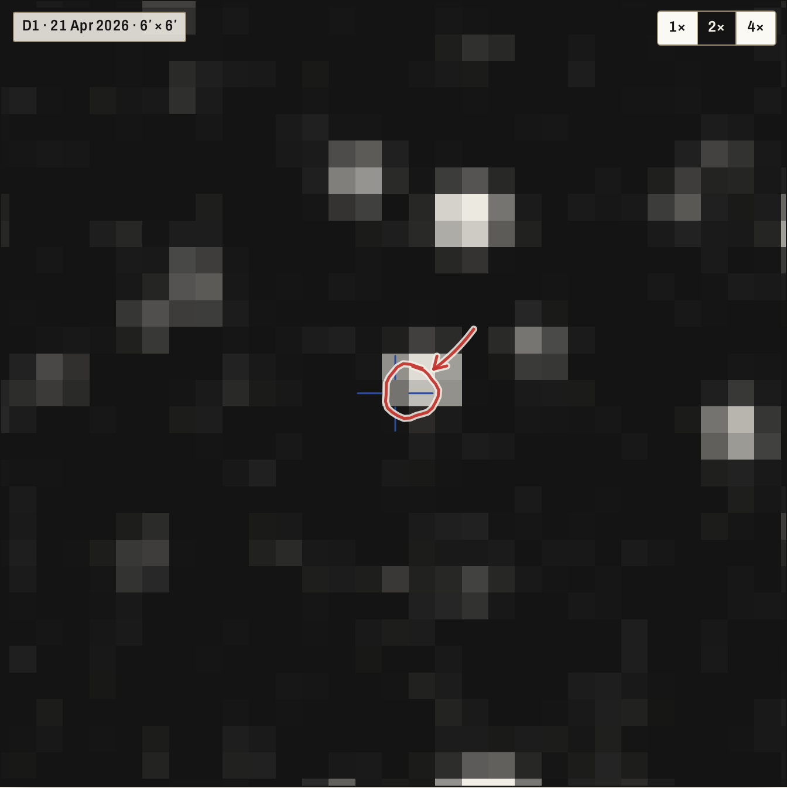
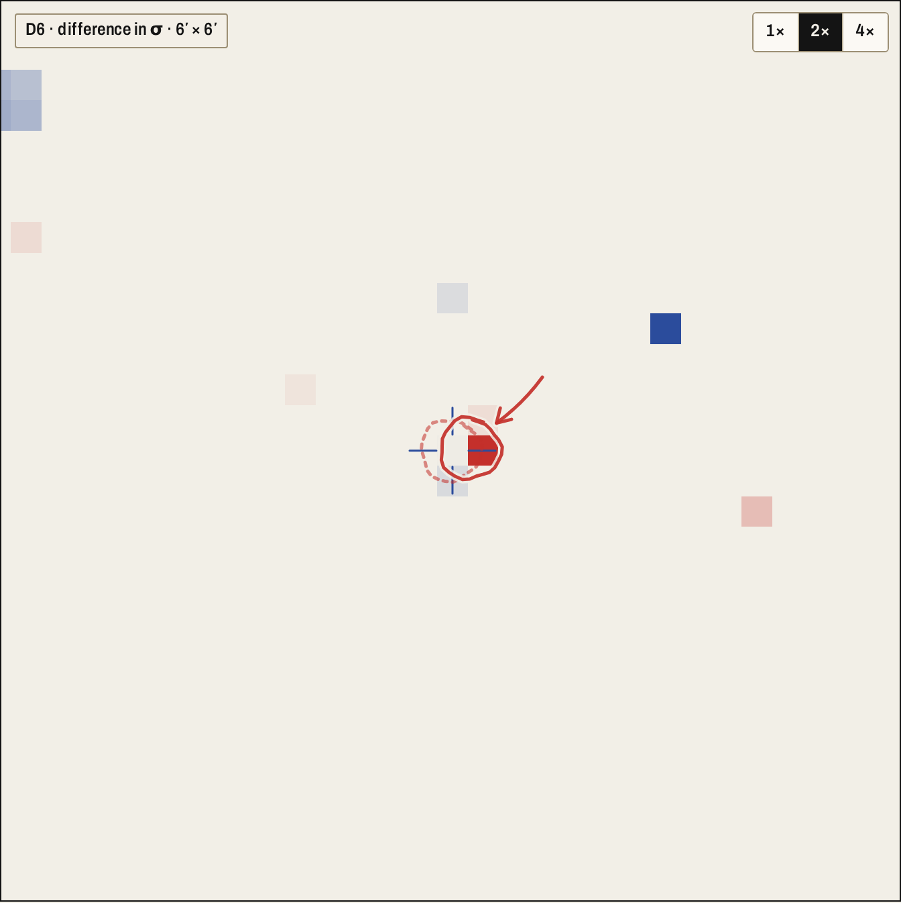

NASA Space Apps Challenge 2026 · Planet X and SPHEREx
SPHEREx Viewer
A movie of the changing infrared sky
Real SPHEREx images of any patch of sky, epoch by epoch, so anyone can see what moved or changed brightness.
NASA Space Apps Challenge 2026 · Planet X and SPHEREx
A movie of the changing infrared sky
Real SPHEREx images of any patch of sky, epoch by epoch, so anyone can see what moved or changed brightness.

See it move · WISE 0855, the coldest brown dwarf known


